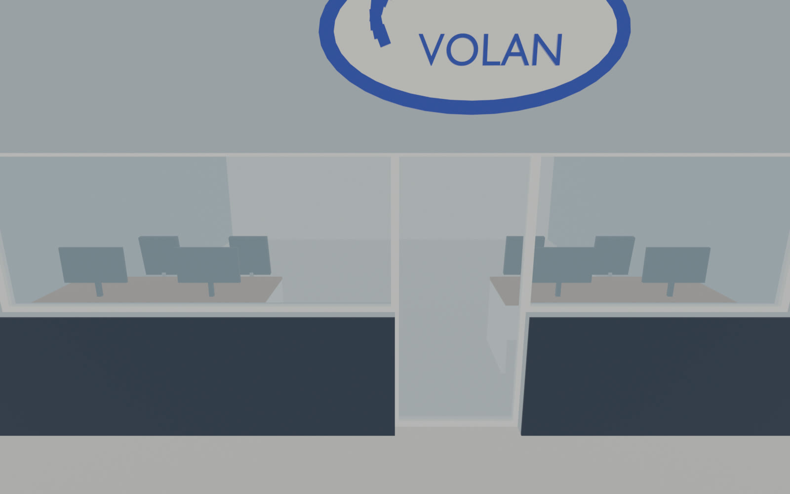
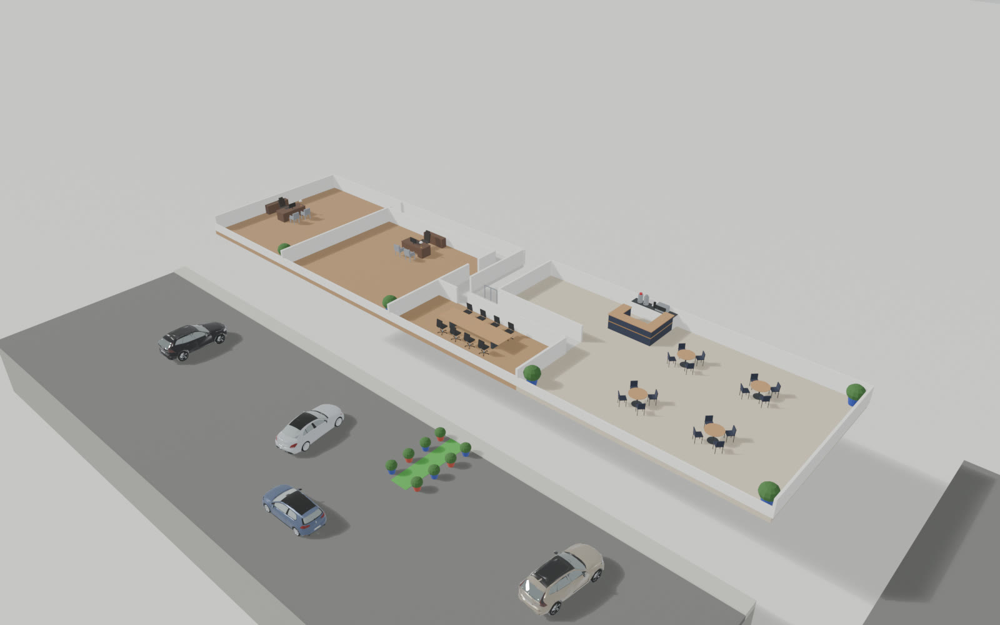
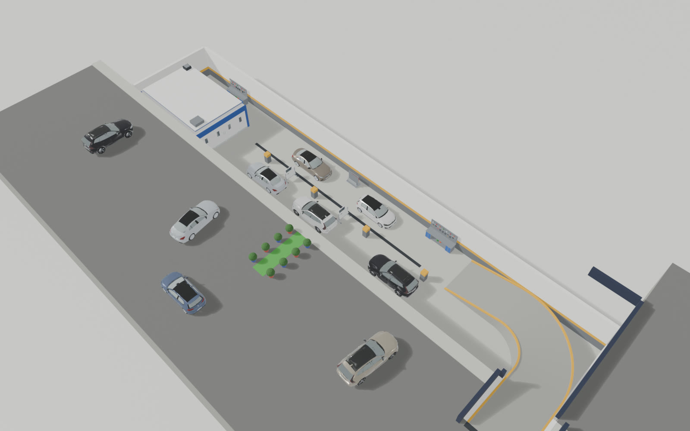

Tesisimiz
Dışarıdan gördüğünüz bina, içeride altı bölüm. Modeli döndürün, bir bölüme dokunun.

Şaşmaz Oto Sanayi Sitesi · Etimesgut
Randevu alAra
Dışarıdan gördüğünüz bina, içeride altı bölüm. Modeli döndürün, bir bölüme dokunun.
Şaşmaz Oto Sanayi Sitesi · Etimesgut
 2134156
2134156
 Oto KuaförAna kat · sol
Oto KuaförAna kat · sol
OfisAna kat · orta
Bekleme SalonuÜst kat
KaportaAlt kat BoyaAlt kat · fırın
BoyaAlt kat · fırın
Ana kat · Mekanik 1 + 2
Bakım, fren, süspansiyon, motor.

Mekanik atölyelerinde
Arıza tespiti, yazılım ve elektrik işleri.
Sürükle: döndür · Tekerlek: yakınlaş